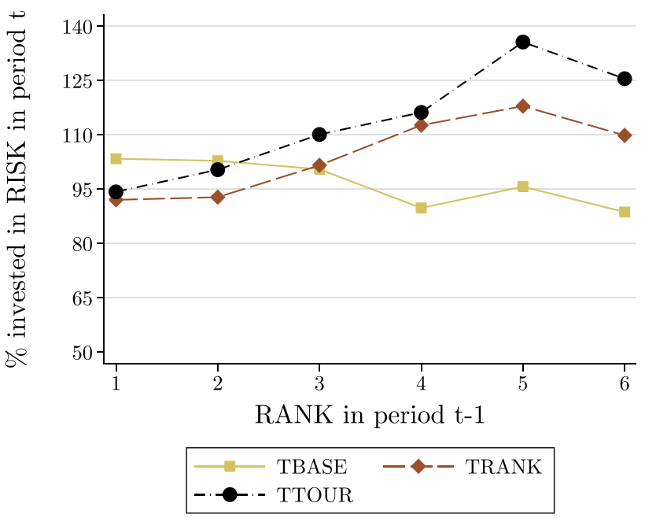

Fondamenti di Economia Comportamentale
#1
settembre 2024
Di che si parla oggi
Alcuni recenti sviluppi della ricerca in tema di decisioni in condizioni di rischio e incertezza.
Ci concentreremo sulle influenze esercitate…
- Dalle loot boxes nei videogiochi (Cordes, Dertwinkel-Kalt, e Werner 2024).
- Da sistemi di remunerazione basati su classifiche (Kirchler, Lindner, e Weitzel 2018).
Loot che?
- Le loot boxes (LB) sono lotterie che offrono contenuti digitali nei videogiochi.
- Acquistabili con denaro reale o virtuale.
- In genere hanno la forma di un forziere o un pacchetto di carte.

Esempio: Overwatch

Loot che? (2)
Le ricompense delle LB differiscono tipicamente in rarità e utilità.
Alcune possibili ricompense:
- Personaggi giocabili
- Oggetti utili (ad esempio armi e armature).
- Skin che modificano l’aspetto dei personaggi.
- Altre risorse preziose.
Loot boxes in EA Sports FC 24
Loot che? (3)
- Un mercato enorme
- Nel 2020, le LB hanno generato un fatturato globale di 15 miliardi di dollari.
- Il problema
- Le LB sono assimilabili al gioco d’azzardo e possono alimentare problemi di ludopatia…
…ma al momento non esiste una normativa efficace che ne limiti l’utilizzo.
- Le LB sono assimilabili al gioco d’azzardo e possono alimentare problemi di ludopatia…
Scatole malvagie?
Le LB sono progettate in modo tale da oscurare le reali possibilità di vincita.
Il loro design può ad esempio caratterizzarsi per la presenza di uno o entrambi i seguenti elementi:
- Le probabilità di vincita sono censurate.
- I giocatori ricevono feedback selettivi sui premi vinti da altri.
Probabilità censurate: esempio
- Nella modalità Ultimate team di EA Sports FC (l’ex FIFA), gli utenti possono acquistare LB che permettono di includere nuovi giocatori nella propria squadra. Tuttavia, le probabilità di “vincere” un giocatore sono fornite solo per intervalli approssimativi.
Feedback selettivo: esempio
- In Raid: Shadow Legends, gli utenti ricevono una notifica quando un altro utente vince una ricompensa rara. Siccome vengono segnalate solo le ricompense rare, ciò fornisce un campione distorto della distribuzione delle ricompense.
Il contributo di Cordes et al. (2024)
Domanda di ricerca: censurare le probabilità di vincita e fornire feedback selettivi può davvero influenzare la propensione ad acquistare lotterie?
Metodi: due esperimenti online condotti su Prolific.
- Partecipanti: circa 1000 individui residenti in UK (617 nell’Esperimento 1 e 414 nell’Esperimento 2).
Design
In entrambi gli esperimenti, i partecipanti devono dichiarare la propria disponibilità a pagare per cinque lotterie.
Ogni lotteria paga un premio monetario non-nullo con probabilità \(q\%\), e un premio nullo con probabilità \((1-q)\%\).
Il premio non-nullo può essere piccolo (pari a 10 monete) o grande (pari a \(x\) monete).
Per ciascun partecipante e ciascuna lotteria, vengono estratti senza reinserimento una probabilità \(q \in \left\lbrace 10, 20, 30, 40, 50 \right\rbrace\) e un premio \(x \in \left\lbrace 100, 120, 140, 160, 180 \right\rbrace\).
Il premio grande ha sempre una probabilità dell’1% di essere selezionato.
Design (2)
- Esempio: se \(q = 10\%\) e \(x = 100\), allora la lotteria paga…
- 0 monete con una probabilità del 90%.
- 10 monete con una probabilità del 9%.
- 100 monete con una probabilità dell’1%
- Prima di dichiarare la propria disponibilità a pagare per una lotteria, ai partecipanti è chiesto di esprimere la propria aspettativa sulla frequenza di vincita del premio grande in 100 ripetizioni della lotteria.
Design (3)
I partecipanti sono assegnati in modo casuale a diversi gruppi di trattamento.
I trattamenti si differenziano per le informazioni riguardanti lotterie ricevute dai soggetti.
- Trattamenti dell’Esperimento 1: Control, Censored, Sample, Joint.
- Trattamenti dell’esperimento 2: Info, Joint.
Esperimento 1: trattamenti
- Control: ai partecipanti vengono comunicate le probabilità esatte di vincere 0, 10 e \(x\) monete. Non viene fornita alcuna informazione aggiuntiva.
Esperimento 1: trattamenti (2)
- Censored: ai partecipanti viene comunicata la probabilità complessiva di vincere un premio non-nullo, ma non l’esatta probabilità di vincere il premio grande.
Esperimento 1: trattamenti (3)
- Sample: ai partecipanti vengono comunicate le probabilità esatte di vincere 0, 10 e \(x\) monete. Ricevono inoltre informazioni circa i cinque esiti migliori in un campione di 400 ripetizioni della lotteria.
Esperimento 1: trattamenti (4)
- Joint: ai partecipanti viene comunicata la probabilità complessiva di vincere un premio non-nullo (ma non l’esatta probabilità di vincere il premio grande). Ricevono inoltre informazioni circa i cinque esiti migliori in un campione di 400 ripetizioni della lotteria.

Esperimento 1: implementazione
Pagamento fisso per la partecipazione: 1.50$.
Un partecipante su sei è selezionato per ricevere un pagamento bonus. Condizionatamente all’essere selezionati, il pagamento bonus medio alla fine dell’esperimento è di 5.35$.
Determinazione del pagamento bonus
Per ciascun vincitore è estratto un numero casuale \(r\) compreso tra 0 e \(x\) (il valore del premio grande). Se \(r\) è maggiore o uguale della disponibilità a pagare del partecipante per la lotteria, allora il pagamento bonus è pari al valore realizzato della lotteria. Viceversa, se \(r\) è minore della disponibilità a pagare, allora il pagamento bonus è pari a \(r\) monete.
Esperimento 1: risultati
- Rispetto a Control, la disponibilità media a pagare per le lotterie è significativamente superiore in Sample (+43%), in Censored (+45%) e in Joint (+100%).
Esperimento 1: risultati (2)
- L’effetto delle probabilità censurate e dei feedback selettivi sembra operare per mezzo della convinzione di vincere il premio grande.
Esperimento 1: risultati (3)
La spesa in LB potrebbe essere dovuta a problemi di scarso autocontrollo.
Nessuna relazione statisticamente significativa tra autocontrollo (elicitato con il metodo di Tangney, Baumeister, e Luzio Boone 2004) e disponibilità a pagare.
Esperimento 1: risultati (4)
Questi risultati hanno validità esterna?
Il tempo speso in media sui videogiochi dai partecipanti all’esperimento è di 1.2 ore al giorno.
Il 69% dei partecipanti sa cosa sono le LB; il 17% spende una somma positiva ogni mese per l’acquisto di LB; l’11% ha speso, almeno una volta nella vita, una somma superiore rispetto a quanto inizialmente preventivato per l’acquisto di LB.
La tendenza a giocare d’azzardo è elicitata usando il metodo di Ferris e Wynne (2001) per la costruzione del Gambling Severity Index.
Esperimento 1: risultati (5)
Correlazione significativa (\(\rho = 0.26\), \(\text{p-value} < 0.01\)) tra uso di LB e Gambling Severity Index.
Correlazione significativa tra disponibilità a pagare per le lotterie nell’esperimento e overspending in LB nel mondo reale.
Esperimento 2: nuovo trattamento
- Info: ai partecipanti viene detto che i premi non-nulli non hanno la stessa probabilità di essere ricevuti. Ricevono inoltre informazioni sull’esito di 50 ripetizioni della lotteria.
Esperimento 2: risultati
- Le informazioni addizionali ricevute in Info riducono le aspettative di vittoria rispetto a Joint, ma non hanno alcun impatto significativo sulla disponibilità a pagare.
Il contributo di Cordes et al. (2024): tiriamo le somme
- Occhio ai videogiochi con acquisti in-game!
Performatività relativa e scelte di investimento
- Nella finanza si da spesso enfasi alla performatività degli investitori rispetto ai propri pari.
Il contributo di Kirchler et al. (2018)
Rifacendoci alla terminologia dell’articolo, parleremo di:
- Classifiche per denotare quelle situazioni in cui gli investitori vengono ordinati in senso decrescente sulla base della loro performance.
- Tornei per denotare quelle situazioni in cui la remunerazione degli investitori è determinata dalla propria posizione in classifica.
Domanda di ricerca: quali sono le conseguenze dell’utilizzo di classifiche e tornei sulle scelte di investimento?
Metodi: un esperimento lab-in-the-field (PROF), un esperimento in laboratorio (STUD), un esperimento online (PROFONLINE).
Design
Ciascun esperimento prevede otto scelte di investimento.
In ciascuno degli otto periodi, i partecipanti devono scegliere quale frazione della propria ricchezza allocare in:
- Un asset risk-free con un rendimento dello 0.015.
- Un asset rischioso con un rendimento atteso dello 0.036 \(\pm\) 0.159.
La ricchezza si trasmette da un periodo all’altro e può quindi accumularsi o erodersi nel tempo a seconda dell’esito degli investimenti.
Design (2)
In ciascun periodo è possibile investire fino al 200% della propria ricchezza.
L’ammontare investito eccedente la propria ricchezza viene prestato dagli sperimentatori al tasso risk-free (0.015).
All’inzio dell’esperimento, a ciascun partecipante vengono presentate 30 realizzazioni casuali dell’asset rischioso in modo da familiarizzare con esso.
Design (3)
I partecipanti vengono assegnati in modo casuale a uno dei trattamenti dell’esperimento.
Successivamente, i suggetti in ciascun trattamento vegnono allocati casualmente a gruppi di sei individui. La composizione dei gruppi rimane la stessa per tutta la durata dell’esperimento.
I trattamenti differiscono in termini di incentivi.
- Trattamenti degli esperimenti PROF e STUD: Tbase, Trank, Ttour.
- Trattamenti dell’esperimento PROFONLINE: TrankPRIV, TrankFIN.
Esperimento PROF: implementazione
Partecipanti: 252 investitori professionisti impiegati in istituti finanziari di diversi paesi dell’area OCSE.
- Regolarmente esposti a classifiche, valutazioni competitive, remunerazioni basate su bonus, problemi di allocazione di portafoglio.
Pagamento fisso per la partecipazione: 18€.
Dotazione (ricchezza) all’inizio dell’esperimento: 90€.
Un partecipante su 5 viene selezionato per ricevere un pagamento bonus sulla base delle decisioni prese durante l’esperimento. Pagamento bonus medio alla fine dell’esperimento: 52€ (massimo: 600€).
Esperimento PROF: trattamenti
- Tbase: nessun feedback comparativo ricevuto durante la durata dell’esperimento. L’eventuale pagamento bonus è proporzionale alla ricchezza alla fine dell’esperimento.
Esperimento PROF: trattamenti (2)
Trank: alla fine di ogni turno, ciascun partecipante visualizza una classifica della ricchezza dei membri del proprio gruppo e viene informato della propria posizione in classifica. L’eventuale pagamento bonus è proporzionale alla ricchezza alla fine dell’esperimento.
La classifica è anonima: l’identità degli investitori non viene rivelata.
Esperimento PROF: trattamenti (3)
Ttour: alla fine di ogni turno, ciascun partecipante visualizza una classifica della ricchezza dei membri del proprio gruppo e viene informato della propria posizione in classifica. L’eventuale pagamento bonus dipende dalla propria posizione in classifica alla fine dell’esperimento.
Gli ultimi tre classificati non ricevono nulla. La ricchezza accumulata dai primi tre classificati viene invece sommata e il primo ne riceve metà, mentre il secondo ne riceve un terzo e il terzo ne riceve un sesto.
La classifica è anonima: l’identità degli investitori non viene rivelata.
Esperimento PROF: risultati
A parità di condizioni, l’assunzione di rischio è significativamente inversamente proporzionale ai ritorni delle scelte di investimento passate.
A parità di condizioni, i soggetti in Trank e Ttour prendono significativamente più rischi rispetto a quelli in Tbase.
- Confrontando le colonne da 4 a 6, si nota che il risultato è trainato dai soggetti nella parte bassa della classifica (“LOW”).

Esperimento PROF: risultati (2)
- Assunzione di rischio in funzione della propria posizione in classifica nel periodo precedente.

Esperimento PROF: risultati (3)
I soggetti ai primi posti in classifica investono nell’attività rischiosa in modo relativamente simile in tutti i trattamenti.
In Trank e Ttour, i soggetti nella parte bassa della classifica assumono rischi maggiori, investendo oltre il 110% della loro ricchezza nel’attività rischiosa.
- Rispetto a Tbase, la percentuale di ricchezza investita nell’asset rischioso è significativamente superiore in Trank (+20% circa) e ancor di più in Ttour (+30% circa).
Esperimento STUD: implementazione
I risultati dell’esperimento PROF hanno valenza universale?
Per dare risposta a questa domanda viene condotto un nuovo esperimento con un campione di partecipanti diverso: 432 studenti dell’Università di Innsbruck (Austria).
I pagamenti sono ridotti di due terzi rispetto a quelli degli investitori professionali: il pagamento bonus alla fine dell’esperimento è di 18€ (massimo: 323€).
I trattamenti sono analoghi a quelli già visti in PROF.
Esperimento STUD: risultati
- A differenza di quanto avviene in PROF, i soggetti in Trank non mostrano differenze significative nell’assunzione di rischio rispetto a quelli in Tbase.
- La presenza di una classifica non è sufficiente a influenzare le scelte di investimento, nemmeno per i soggetti nella parte bassa della classifica.
- L’effetto di Ttour continua a essere positivo e statisticamente significativo: la presenza di remunerazioni basate sulla performance relativa influenza positivamente l’assunzione di rischio.
Esperimento STUD: risultati (2)
- Assunzione di rischio in funzione della propria posizione in classifica nel periodo precedente.
Esperimento STUD: risultati (3)
Nessuna differenza significativa tra Trank e Ttour, a prescindere dalla posizione in classifica.
I soggetti in Ttour prendono significativamente più rischi, e questa tendenza cresce al diminuire della posizione in classifica.
Il contributo di Kirchler et al. (2018): altri risultati
- Nell’Esperimento PROF, vengono introdotti altri due trattamenti per testare la robustezza dei risultati:
- Nel trattamento TrankLOT, l’esperimento viene presentato con un linguaggio neutro anziché in termini di investimento (si parla di “numero” anziché di “rendimento”, di “alternative” anziché di “asset”, eccetera).
- Nel trattamento TrankFAM, il pagamento bonus non viene erogato al partecipante ma a un suo famigliare.
- L’assunzione di rischio non varia in modo significativo rispetto al trattamento originale Trank.
Il contributo di Kirchler et al. (2018): altri risultati (2)
- L’Esperimento PROFONLINE consiste di due trattamenti.
- TrankPRIV: un campione di investitori professionisti viene fatto giocare insieme a persone normali, senza porre alcuna enfasi sul fatto che alcuni partecipanti appartengono al mondo della finanza mentre altri no.
- TrankFIN: gli investitori professionisti vengono fatti giocare gli uni contro gli altri dopo aver posto enfasi sul fatto che tutti i partecipanti appartengono al mondo della finanza.
- L’assunzione di rischio da parte degli investitori non differisce in modo significativo nei due trattamenti.
Il contributo di Kirchler et al. (2018): tiriamo le somme
- Le classifiche condizionano significativamente le scelte degli investitori professionali, anche quando non influenzano la loro remunerazione.
- La presenza di una classifica è sufficiente a innescare una preferenza per performare relativamente meglio degli altri.
Il contributo di Kirchler et al. (2018): tiriamo le somme (2)
- Questo risultato è robusto a:
- Variazioni nel modo in cui l’esperimento viene presentato (Esperimento PROF, terminologia finanziaria in Trank vs. terminologia astratta in TrankLOT)
- Variazioni nel beneficiario dei pagamenti (Esperimento PROF, sé stessi in Trank vs. membro della famiglia in TrankFAM)
- Variazioni nell’enfasi che viene data alla figura professionale degli investitori (Esperimento PROFONLINE).
- Non è però generalizzabile all’intera popolazione (STUD).
Il contributo di Kirchler et al. (2018): tiriamo le somme (3)
- Possibili motivi sottostanti al risultato di Kirchler et al.:
- Gli individui competitivi tendono ad auto-selezionarsi nel settore della finanza più di quanto avviene negli altri settori.
- La forte attenzione alla performance relativa tra i professionisti è influenzata dalla cultura aziendale del settore finanziario, dove le classifiche e le performance relative sono caratteristiche pervasive. La consapevolezza di essere i migliori influenza positivamente l’immagine che investitori hanno di sé stessi.
Il contributo di Kirchler et al. (2018): tiriamo le somme (4)
- I risultati hanno risvolti pratici importanti:
- La pressione competitiva nel settore finanziario ha origine in ultima istanza dalle pressioni esercitate sugli investitori dai clienti, nella misura in cui essi richiedono rendimenti anormali elevati.
- Ua migliore alfabetizzazione finanziaria della popolazione potrebbe contribuire a prevenire una domanda irrealistica di sovraperformance.